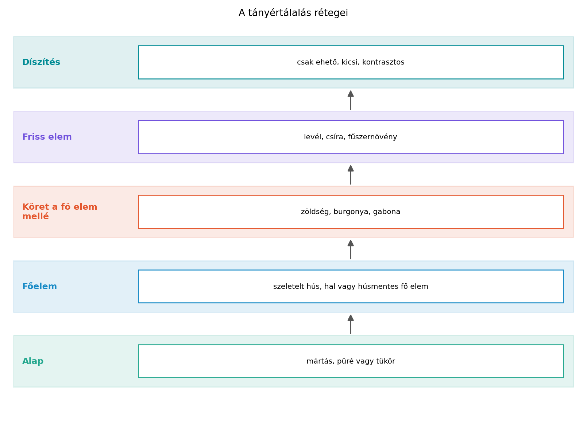

A tálalás nemcsak díszítés, hanem a vendég első benyomása, a konyha munkájának bemutatása. Ebben az alfejezetben a tálalási módokat, a díszítési elveket, a svédasztal felépítését és a fotózható tálalást tanulod meg úgy, hogy az étel a tányéron is biztonságos, átlátható és étvágygerjesztő maradjon.
Egy rendezvényen a vendég először a tányért látja. A jól felépített tányér eladja az ételt, segíti az adagolást, és jelzi a vendégnek, hogy a konyha tudatosan dolgozott. Ugyanakkor a tálalás nem mehet a biztonság rovására: a forró ételt ne hűtsük ki, a nyers és kész elemeket ne keverjük, és az allergéneket a díszítésben is figyelembe kell venni.
Képzeld el, hogy egy nyolcvanfős büfét készítesz. A vendég a tányérjával a hideg zónánál kezd, majd a meleg főételhez lép, végül a desszerthez. Ha a tányérokat rossz helyre teszik, a sor keresztezi egymást, a meleg étel hidegen marad, a hideg saláta pedig átmelegszik. Ezért a tálalási módot és a büfé elrendezését a konyhán előre, munkatervvel kell kijelölni.
A tálalási mód azt mutatja meg, hogy ki adagolja az ételt, hol történik a tálalás, és milyen edényből kerül a tányérra. A választás az alkalomtól, a vendégkörtől, a konyha létszámától és az étel jellegétől függ.
| Tálalási mód | Ki adagol | Hol történik az adagolás | Előny | Kockázat |
|---|---|---|---|---|
| Tányértálalás (konyhai) | Szakács a konyhán | Konyha, tálaló pult | Pontos adag, egységes kép, gyors felszolgálás | Az étel a szállítás közben hűlhet |
| Tálas tálalás | Vendég vagy pincér | Asztalnál | Családias, a vendég választhat | A maradék higiéniai kockázatot jelenthet |
| Angolos tálalás | Pincér a tálból szed a vendég tányérjára | Vendég asztalánál | Személyes, a pincér irányítja az adagot | Lassú, több felszolgálót igényel |
| Franciás tálalás | Vendég maga szed a kínált tálból | Vendég asztalánál | Vendég szabadon választ | Keresztszennyeződés, ha többen ugyanazzal az eszközzel dolgoznak |
| Orosz tálalás | Pincér vagy szakács a segédasztalon (guéridon) tányérra adagol | Vendég asztala mellett | Látványos, személyes | Lassú, sok eszközt és helyet igényel |
| Tányérszerviz búrával (cloche) | Szakács a konyhán tányérozza, búrával fedve | Vendég asztalánál, a búra leemelése után | Ünnepélyes, melegen tartja az ételt | Sok előkészületet, búrát igényel |
| Svédasztal | Vendég maga szed | Büféasztal | Nagy létszám, szabad választás | Hőntartási és keresztszennyeződési kockázat |
A táblázat különbségei felülnézetből a legjobban láthatók: a lenti ábra hét jelenete azt mutatja, ki adagol (szakács, pincér vagy vendég), és honnan kerül az étel a tányérra; mindegyik alatt a fő kockázat áll.
Figyeld meg, hogy az angolos és a franciás tálalás csak abban különbözik, ki fogja a szedőeszközt: angolosnál a pincér, franciásnál a vendég. A HTML-kiadásban egy jelenetre mutatva megjelenik a rövid leírás.
Megjegyzés. A felszolgálási protokoll részletei (melyik oldalról, melyik kézzel szolgálnak fel) üzemenként és iskolánként változhatnak. A szakács szemszögéből a lényeg, hogy a tálalási mód meghatározza az adagolást, a hőntartást és az eszközöket.
Higiénia. A tálaló edény, a szedőeszköz és a tányér tiszta legyen. A nyers és a kész ételhez külön eszközt használj. A hőntartásnál a meleg étel legalább 63 °C-on, legfeljebb 2 órán át, a hideg étel legfeljebb 5 °C-on tartandó (ellenőrizendő: NÉBIH-útmutató / HACCP-terv); határtúllépésnél zárolás és selejtezés.
Továbbvitt eredmény. A tálalási mód kiválasztása és a díszítési elvek alkalmazása a gyakorlati vizsga menükészítési értékelésének része; ezt használjuk az A szakmai vizsga felépítése és az elméleti felkészülés és a Gyakorlati vizsga: menükészítés munkatervvel és értékelés alfejezetekben.
A tányéron minden elemnek van szerepe. A díszítés nem takarhatja el a fő elemet, és nem vezetheti félre a vendéget.
A tányértálalás felépítését az alábbi rétegábra mutatja: alulról felfelé, a nyilak irányában a mártás, a fő elem, a köret (a fő elem mellé), a friss elem és a díszítés kerül a tányérra, ugyanabban a sorrendben, mint a lenti összeállítási szabályban.

Allergén. A díszítés is tartalmazhat allergént: diófélék, szezámmag, zellerlevél, mustármag, tejtermék. Ha a tányérra díszítésként diót szórsz, a vendéget tájékoztatni kell, és a tálaló szakácsnak is tudnia kell, mi van a tányéron. Allergiás vendégnél a díszítő elemet el kell hagyni vagy külön, ellenőrzött eszközzel kell helyettesíteni.
Szabály. A tányér összeállításának sorrendje.
A kész tányért a lenti helyes/hibás pár szempontjai szerint ellenőrizd. A helyes tányéron a fő elem (1) az előtérben áll, a vágási felület a vendég felé néz, a köret (2) mellette, a mártás (3) alatta vagy mellette van, a perem (4) üres és tiszta, a díszítés (5) ehető és az ételhez illő. A hibás tányéron a peremen folt és ujjlenyomat (a) látszik, a köret zsúfolt és a peremre lóg (b), a mártás elönti a panírt (c), a dísz nem ehető (d).
Ezeket a szempontokat a gyakorlati vizsgán is értékelik. A HTML-kiadásban a két tányér között válthatsz, és egy hibára mutatva megjelenik a javítás módja.
A svédasztal akkor működik jól, ha a sor logikusan halad, az ételek hőmérséklete szabályozott, és a vendég azonnal megkapja a tájékoztatást.
Az 1. lépés térképére mutat mintát a lenti ábra. A vendég a sor elején veszi fel a tányért, majd a hideg zónán (hűtött pult vagy jégágy) és a meleg zónán (hőntartók, mérési pontok) át a desszertig halad; az italpult külön áll, hogy ne keresztezze a sort. Minden ételnél saját szedőeszköz és allergénkártya (A) van, a vendég oldalán tüsszentésgátló védi az ételt. Az allergiás vendég tála a konyhai pult felől, külön érkezik.
A bal alsó kis rajz a Szemléletes kép hibáját mutatja: ha a tányérok a sor közepén vannak, a vendégek két irányból érkeznek, és a sorok keresztezik egymást. A HTML-kiadásban az eljárás 9 lépését léptetheted: minden lépésnél kiemelődik az érintett elem.
Kritikus pont. A büfé hőntartás során a meleg étel hőmérsékletét legalább 63 °C-on kell tartani, legfeljebb 2 órán át, a hideg ételt legfeljebb 5 °C-on; határtúllépésnél zárolás és selejtezés. A mérés helye a legvastagabb rész, a műveletet dokumentálni kell. A határértéket munkahelyenként ellenőrizd (ellenőrizendő: melegentartás és hidegentartás pontos értéke, HACCP-terv / NÉBIH-útmutató).
Higiénia. A büféasztalnál védőburkolat (csepegés- és tüsszentésgátló) szükséges, ha a vendég saját maga szed. A szedőeszközöket rendszeresen cserélni kell. A nyers zöldséget és a kész ételt ne tedd ugyanarra a tálcára.
Egy 80 fős büfére csirkepaprikást készítesz. A konyhai adag 180 g készétel. Svédasztalnál a résztvevők szabadon szednek, ezért 20% ráhagyást tervezel.
A ráhagyással:
Ellenőrzés: ha mindenki 180 g-ot vesz, akkor adag, tehát a ráhagyás körülbelül 16 extra adag. A tálalóedények számát az edénykapacitás és a HACCP-terv szerint kell meghatározni (ellenőrizendő: a tálalóedény gyakorlati kapacitása).
Az étlapfotó a konyha névjegye. A fotón látható tányérkép akkor jó, ha a vendég később ugyanazt az ételt kapja, amit a képen látott. A fotóhoz a tányér legyen tiszta, a háttér egyszerű, a fény természetes vagy lágy.
Jogszabály. A vendéglátó étlapon vagy hirdetésben nem használhat megtévesztő képet; a fogyasztónak a kapott ételnek meg kell felelnie a hirdetett jellemzőknek. A megtévesztő gyakorlat tilalmát a fogyasztóvédelmi hatóság ellenőrzi (ellenőrizendő: fogyasztóvédelmi szabály).
Gyakorlati útmutató. Ha van lehetőséged, egy egyszerű tányért állíts össze a fenti rétegábra szerint. Készíts róla telefonos fotót, és értékeld: látszik-e a fő elem, tiszta-e a perem, felismerhető-e a díszítés, és az adag a valóságot mutatja-e. A gyakorlathoz tankonyhát vagy oktatói felügyeletet válassz; otthon csak akkor gyakorolj, ha a konyhai higiéniai feltételeket be tudod tartani.
A tálalás minőségét érzékszervileg és mérhetően is ellenőrizheted.
Egy rendezvényen a salátát a szakács pirított dióval díszítette, de a büfében nem volt allergénkártya. A felszolgáló nem tudta, hogy a díszítés diót tartalmaz. Egy dióallergiás vendég megkérdezte, fogyaszthatja-e a salátát, de a felszolgáló bizonytalan választ adott. A vendég biztonságból nem evett belőle, és ezt később a rendező felé jelezte. A tanulság: a büfében minden díszítő elemet allergénforrásként kell kezelni, és a személyzetet be kell tanítani a pontos tájékoztatásra.
1. feladat (A). Nevezz meg három tálalási módot, és írd le mindegyik egy előnyét.
2. feladat (A). Mi a különbség az angolos és a franciás tálalás között?
3. feladat (B). Az alábbi svédasztal-elrendezésben három hibát találsz. Írd le a hibákat, és javítsd őket: - A hideg saláták és a meleg húsok ugyanazon az asztalon egymás mellett állnak, - a szedőkanalak fogantyúja az ételen fekszik, - az ételnél nincs allergénkártya.
4. feladat (B). Tegyél fel egy 28 cm átmérőjű tányérra grillezett csirkemellet, édesburgonya-pürét, párolt brokkolit és mustáros mártást. Írd le a rétegábra sorrendjét, a díszítést és az allergén figyelmeztetést.
5. feladat (C). Készíts svédasztal-elrendezési tervet 60 fős céges büféhez. Jelöld a hideg, meleg és desszertzónákat, a tányérok helyét, a szedőeszközöket, az allergénkártyákat és a meleg hőntartás mérési pontját.
6. feladat (D). Egy tányért fotózol az étlaphoz. Írd le a fényviszonyokat, a hátteret, a tányér méretét, a fő elem helyzetét, és ellenőrizd, hogy a díszítés nem tartalmaz-e rejtett allergént. Indokold, miért nem szabad a fotón a kapott ételtől eltérő díszítést mutatni.
Önellenőrzés – válaszok
1. feladat. Például: tányértálalás – pontos adag, egységes kép; svédasztal – nagy létszám, gyors kiszolgálás; franciás tálalás – a vendég szabadon választ.
2. feladat. Az angolos tálalásnál a pincér szed a tálból a vendég tányérjára, a franciás tálalásnál a vendég maga szed a kínált tálból.
3. feladat. Hibák: a hideg és meleg zóna közvetlen kapcsolatban van; a szedőeszközök a fogantyúnál szennyezik az ételt; nincs allergénjelölés. Javítás: különítsd el a zónákat, a szedőeszközöket az étel mellé tálcára tedd, és minden ételhez helyezz ki allergénkártyát.
4. feladat. A mustáros mártást először a tányérra pöttyözd vagy húzd csíkban. A csirkemellet tedd a tányér fő pontjára, vágási felülettel a vendég felé. Az édesburgonya-pürét formázd a hús mellé. A párolt brokkolit kis csoportban helyezd el. Díszítésként egy-két friss, kontrasztos levél kerülhet. Allergén. Közölni kell, hogy a mustár allergén; allergiás vendégnél a mártást el kell hagyni vagy mustármentes változattal helyettesíteni.
5. feladat. A tervben a sor elején tányérok álljanak, majd hideg zóna, utána meleg zóna, végül desszertzóna. Minden ételnél külön szedőeszközt és allergénkártyát kell elhelyezni. A meleg ételeket hőntartó pultban tartsd, és tálalás előtt, utántöltéskor is mérd a maghőmérsékletet a legvastagabb részben (a meleg étel legalább 63 °C, a hideg legfeljebb 5 °C; ellenőrizendő: HACCP-terv), a dokumentálással együtt.
6. feladat. A fény legyen lágy, a háttér egyszínű vagy kissé homályos. A tányér 26–28 cm átmérőjű legyen, a fő elem jól látszódjon, a perem tiszta legyen. Az allergén ellenőrzéséhez írd össze a díszítő elemet: ha a dísz dió, szezám vagy mustár, a fotón is fel kell tüntetni, vagy el kell hagyni. Az étlapfotó nem mutathat több vagy más díszt, mint amit a vendég később kap, mert ez megtévesztés.
A tálalási mód megmutatja, hogy ki adagolja az ételt, és hol történik a tálalás. A tányértálalás pontos adagot ad, a tálas és a franciás tálalás a vendég választását engedi, az angolos tálalásnál a pincér szed, az orosz tálalás a segédasztalon, a vendég mellett tányérra adagolást jelent (a búrával fedett, konyhán tányérozott étel külön mód: tányérszerviz búrával), a svédasztal pedig a büféből történő önkiszolgálást. A díszítés mindig ehető, kontrasztos, mértéktartó és allergénjelölt legyen. A svédasztal felépítésekor a hideg, meleg és desszertzónát el kell választani, minden ételhez külön szedőeszközt és allergénkártyát kell tenni. Utántöltéskor az edényt cserélni kell, a hőntartást mérni és dokumentálni kell. A fotózható tálalás akkor jó, ha a kép az adott ételt valósághűen mutatja, és nem vezeti félre a vendéget. Továbbvitt eredmény. A tálalási mód kiválasztása és a díszítési elvek alkalmazása a gyakorlati vizsgán a menükészítés értékelési szempontja; ezt használjuk az A szakmai vizsga felépítése és az elméleti felkészülés és a Gyakorlati vizsga: menükészítés munkatervvel és értékelés alfejezetekben.